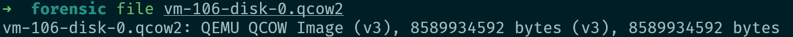
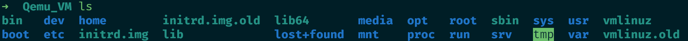
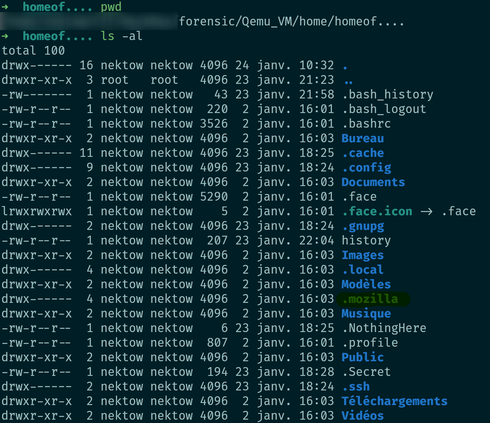
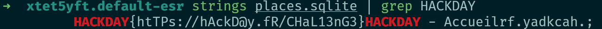

What was I doing
Edgar would like you to determine what he was doing just before leaving. According to his memory, he was conducting research, but on what...? Checkout what the user was researching before he left. Do not run it as a VM it'll change files inside ! sha256: bbd71d5e0435d0abc75d3b969318605bced8ffd847064a65ca9d930769bf61cf
You can download the file here
Writeup
Here is the step by step solution

It seems to be a qemu image
Enable NBD on the Host
modprobe nbd max_part=8Connect the QCOW2 as network block device
qemu-nbd --connect /dev/nbd0 vm-106-disk-0.qcow2Mount the partition from the VM
mount /dev/nbd0p1 /mnt/"mount_point" 
The assignment probably indicate that we have to search browser history so we will search it

Nice we have found firefox
We will grep only useful data

There is the flag
Flag
HACKDAY{htTPs://hAckD@y.fR/CHaL13nG3}
NB : Don't forget do unmount and disconnect :
umount /mnt/"mount_point"
| qemu-nbd --disconnect /dev/nbd0
| rmmod nbd